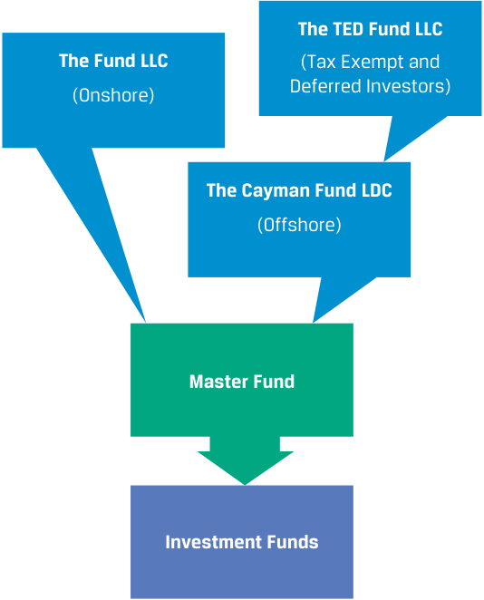
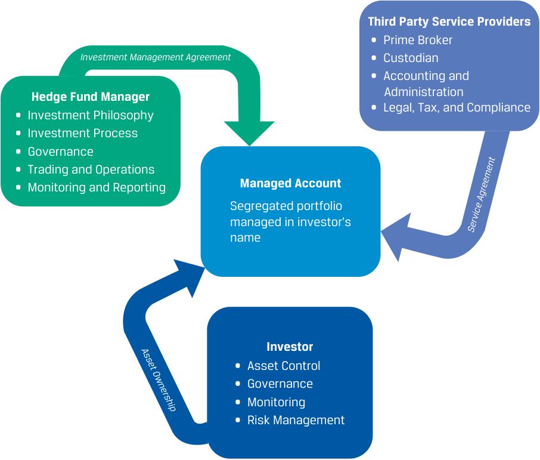
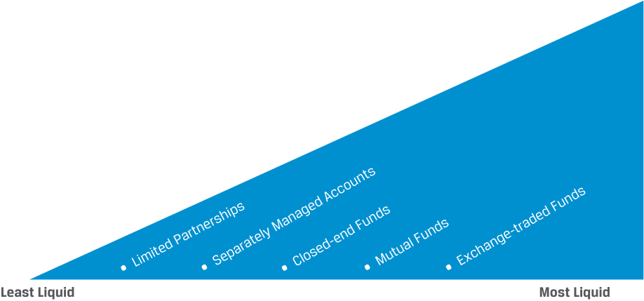
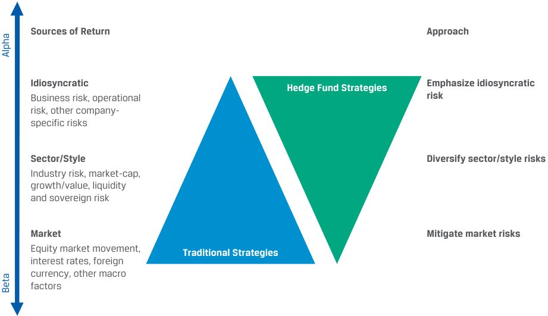
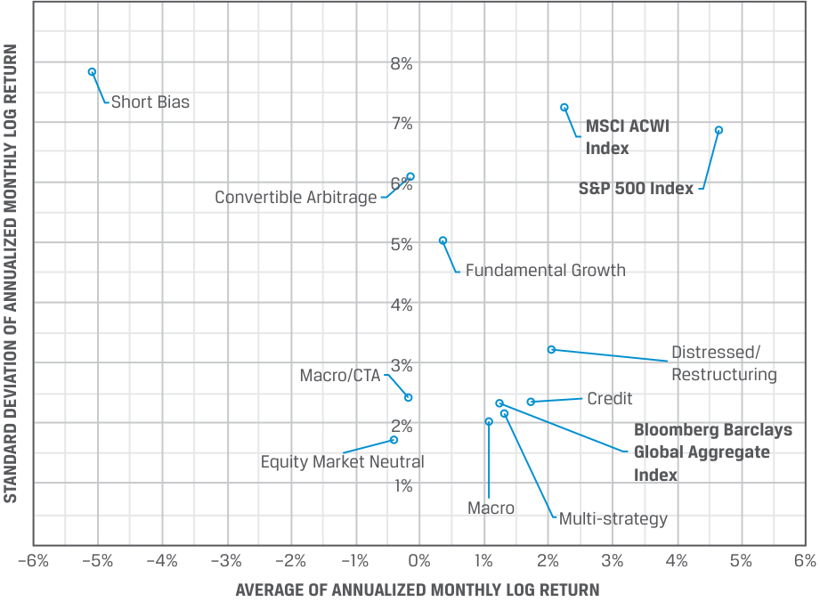

Learning Module 6 Hedge Funds - Part 2: Hedge Fund Investment Forms
Volume 8: Alternative Investments
Learning Module 6 Hedge Funds
Part 2/3: Hedge Fund Investment Forms (PDF Pages 168–182)
Tập 8: Đầu tư Thay thế (Alternative Investments)
Học phần 6: Quỹ Phòng hộ (Hedge Funds)
Phần 2/3: Các Hình thức Đầu tư Quỹ Phòng hộ (Trang PDF 168–182)
- Select the statements that are true:
A. The primary drivers of returns from stocks are growth projections, dividends, and retained earnings.
- Hãy chọn các phát biểu đúng:
-
A. Các động lực chính thúc đẩy lợi nhuận từ cổ phiếu là các dự phóng tăng trưởng (growth projections), cổ tức (dividends), và lợi nhuận giữ lại (retained earnings).
-
B. Các động lực chính thúc đẩy lợi nhuận từ một trái phiếu là lãi suất (interest rates), rủi ro tín dụng (credit risk), và các khoản thanh toán lãi coupon (coupon payments).
-
C. Các động lực chính thúc đẩy lợi nhuận từ các quỹ phòng hộ là sự biến động của thị trường (market volatility) và sự kém hiệu quả của thị trường (market inefficiency).
B. The primary drivers of returns from a bond are interest rates, credit risk, and coupon payments.
C. The primary drivers of return from hedge funds are market volatility and market inefficiency.
Lời giải:
Solution:
A, B, and C are all true.
Cả A, B và C đều đúng.
3
3
HEDGE FUND INVESTMENT FORMS
CÁC HÌNH THỨC ĐẦU TƯ QUỸ PHÒNG HỘ (HEDGE FUND INVESTMENT FORMS)
describe investment forms and vehicles used in hedge fund investments
Mục tiêu học tập: Mô tả các hình thức và phương tiện đầu tư (investment forms and vehicles) được sử dụng trong đầu tư quỹ phòng hộ.
A common structural characteristic of a hedge fund is that it is set up as a private investment partnership either onshore or in a tax-advantaged offshore location. Under certain legal restrictions (which vary by jurisdiction), the offering can be open only to a limited number of investors meeting certain income and net worth guidelines.
Một đặc điểm cấu trúc phổ biến của quỹ phòng hộ là nó được thiết lập dưới dạng một công ty hợp danh đầu tư tư nhân (private investment partnership) ở trong nước (onshore) hoặc tại một địa điểm nước ngoài có ưu đãi thuế (tax-advantaged offshore location). Theo một số hạn chế pháp lý nhất định (thay đổi tùy theo khu vực tài phán), đợt chào bán chỉ có thể được mở cho một số lượng giới hạn các nhà đầu tư đáp ứng các tiêu chuẩn nhất định về thu nhập và giá trị tài sản ròng (income and net worth guidelines).
Hedge funds, like private equity funds, are legally typically incorporated and organized as private limited partnerships or limited liability companies with a general partner or managing member who is the hedge fund manager. The partnership or the managing member receives a management fee, and the general partner receives compensation based on fund performance. Hedge fund investors purchase a share of the fund or partnership and receive in return a fixed percentage of the fund returns, minus applicable fees.
Các quỹ phòng hộ, giống như các quỹ vốn cổ phần tư nhân (private equity funds), về mặt pháp lý thường được thành lập và tổ chức dưới dạng các công ty hợp danh hữu hạn tư nhân (private limited partnerships) hoặc công ty trách nhiệm hữu hạn (limited liability companies – LLC) với một thành viên hợp danh (general partner – GP) hoặc thành viên quản lý (managing member) đóng vai trò là nhà quản lý quỹ phòng hộ (hedge fund manager). Công ty hợp danh hoặc thành viên quản lý nhận một khoản phí quản lý (management fee), và thành viên hợp danh nhận thù lao dựa trên hiệu quả hoạt động của quỹ (compensation based on fund performance). Các nhà đầu tư quỹ phòng hộ mua một phần vốn góp của quỹ hoặc công ty hợp danh và nhận lại một tỷ lệ phần trăm cố định trên lợi nhuận của quỹ, sau khi đã trừ đi các khoản phí áp dụng.
The fund documents—private placement memorandum, the partnership agreement, or the articles of incorporation—lay out the legal and contractual relationship between the fund manager and the fund investor and create the operational framework for the fund. Normally, the fund structures are incorporated as perpetual legal entities, but in reality, as the hedge funds close, they are liquidated on a regular basis.
Bộ tài liệu của quỹ—bản cáo bạch chào bán riêng lẻ (private placement memorandum – PPM), thỏa thuận hợp danh (partnership agreement), hoặc điều lệ công ty (articles of incorporation)—quy định mối quan hệ pháp lý và hợp đồng giữa nhà quản lý quỹ và nhà đầu tư vào quỹ, đồng thời tạo lập khung vận hành (operational framework) cho quỹ. Thông thường, các cấu trúc quỹ được thành lập dưới dạng các pháp nhân có thời hạn vĩnh viễn (perpetual legal entities), nhưng trên thực tế, khi các quỹ phòng hộ đóng cửa, chúng vẫn bị thanh lý (liquidated) một cách thường xuyên.
Direct Hedge Fund Investment Forms
Các Hình thức Đầu tư Quỹ Phòng hộ Trực tiếp (Direct Hedge Fund Investment Forms)
A common hedge fund form is a master feeder structure. The master feeder structure is set up for optimum tax efficiency and consists of an offshore feeder fund and an onshore feeder fund—both feeding into a master fund that invests the capital based on its contractual partnership agreements. This structure is depicted in Exhibit 2.
Một hình thức quỹ phòng hộ phổ biến là cấu trúc quỹ chính – quỹ vệ tinh (master feeder structure). Cấu trúc quỹ chính – quỹ vệ tinh được thiết lập nhằm tối ưu hóa hiệu quả về thuế (optimum tax efficiency) và bao gồm một quỹ vệ tinh ở nước ngoài (offshore feeder fund) cùng một quỹ vệ tinh ở trong nước (onshore feeder fund)—cả hai cùng rót vốn vào một quỹ chính (master fund) thực hiện đầu tư nguồn vốn dựa trên các thỏa thuận hợp danh theo hợp đồng của quỹ. Cấu trúc này được minh họa trong Bảng 2 (Exhibit 2).
Exhibit 2: Sample Master-feeder Structure
Bảng 2: Mẫu Cấu trúc Quỹ chính – Quỹ vệ tinh (Exhibit 2: Sample Master-feeder Structure)

Chú thích hình ảnh: - The Fund LLC (Onshore): Quỹ LLC (Trong nước) - The TED Fund LLC (Tax Exempt and Deferred Investors): Quỹ TED LLC (Dành cho các nhà đầu tư được miễn thuế và hoãn thuế) - The Cayman Fund LDC (Offshore): Quỹ Cayman LDC (Nước ngoài) - Master Fund: Quỹ chính (Master Fund) - Investment Funds: Các quỹ đầu tư (Investment Funds)
A common hedge fund fee structure is known as “two and twenty.” In this setup, the hedge fund partnership entity that operates and administers the fund receives a 2% management fee. The general partner, who manages the fund investments, receives 20% of the fund’s net profits. The investment returns, after management and performance fees, flow back to the feeder funds to the investors. Recently, the fee structure has been changing due to pressure from investors. Some of the newer funds are offered with a fee of 1 or 30, where the manager receives the greater of a 1% management fee or an incentive fee of 30% of the fund’s alpha or outperformance against a benchmark, instead of a performance fee based simply on total profits.
Một cấu trúc phí quỹ phòng hộ phổ biến được biết đến với tên gọi “hai và hai mươi” (“two and twenty”). Trong cách thiết lập này, pháp nhân hợp danh quỹ phòng hộ trực tiếp vận hành và quản trị quỹ sẽ nhận mức phí quản lý (management fee) là 2%. Thành viên hợp danh (general partner – GP), người quản lý các khoản đầu tư của quỹ, nhận 20% lợi nhuận ròng (net profits) của quỹ. Lợi nhuận đầu tư, sau khi trừ đi phí quản lý và phí hiệu quả hoạt động, sẽ chảy ngược về các quỹ vệ tinh (feeder funds) để phân phối cho các nhà đầu tư. Gần đây, cấu trúc phí này đang dần thay đổi do áp lực từ phía các nhà đầu tư. Một số quỹ mới hơn được chào bán với mức phí “1 hoặc 30” (1 or 30), trong đó nhà quản lý nhận mức cao hơn giữa phí quản lý 1% hoặc phí khuyến khích (incentive fee) bằng 30% hệ số alpha hay phần lợi nhuận vượt trội (outperformance) của quỹ so với một chỉ số chuẩn (benchmark), thay vì một khoản phí hiệu quả hoạt động chỉ đơn thuần tính trên tổng lợi nhuận.
In addition to the partnership agreement that delineates responsibilities, hedge funds often use side letters to address the specific legal, regulatory, tax, operational, and reporting requirements of an investor. Such side letters complement and can occasionally supersede the terms of the fund’s documents and are typically used when a hedge fund investor requires concessions without changing the private placement memorandum, the partnership agreement, or the articles. Occasionally, specific rights are conferred to a particular investor, such as enhanced information rights.
Bên cạnh thỏa thuận hợp danh vốn phân định rõ các trách nhiệm, các quỹ phòng hộ thường sử dụng các thư thỏa thuận phụ (side letters) để giải quyết các yêu cầu cụ thể về pháp lý, quy định quản lý, thuế, vận hành và báo cáo của một nhà đầu tư. Những thư thỏa thuận phụ như vậy bổ sung và đôi khi có thể thay thế (supersede) các điều khoản trong bộ tài liệu gốc của quỹ và thường được sử dụng khi một nhà đầu tư quỹ phòng hộ yêu cầu những nhượng bộ riêng (concessions) mà không cần phải sửa đổi bản cáo bạch chào bán riêng lẻ (PPM), thỏa thuận hợp danh hay điều lệ quỹ. Đôi khi, các quyền cụ thể được trao riêng cho một nhà đầu tư nhất định, chẳng hạn như quyền được cung cấp thông tin nâng cao (enhanced information rights).
For larger investors, the hedge fund structure could be a fund of one or a separately managed account (SMA). These are separate investment accounts over which the investor retains more influence. In the case of a fund of one structure, the hedge fund is created for one investor, and in the case of an SMA, the investor creates his or her own investment vehicle and the underlying assets are held and registered in the name of the investor. However, the day-to-day management of the account is delegated to the hedge fund manager. These structures may require additional agreements and service providers to operate efficiently and seamlessly. Exhibit 3 shows a typical structure.
Đối với các nhà đầu tư lớn hơn, cấu trúc quỹ phòng hộ có thể là một quỹ một thành viên (fund of one) hoặc một tài khoản được quản lý riêng biệt (separately managed account – SMA). Đây là các tài khoản đầu tư tách biệt mà nhà đầu tư giữ quyền chi phối lớn hơn (retains more influence). Trong trường hợp cấu trúc quỹ một thành viên (fund of one), quỹ phòng hộ được tạo lập dành riêng cho một nhà đầu tư duy nhất; còn trong trường hợp một tài khoản SMA, nhà đầu tư tự tạo lập phương tiện đầu tư của riêng mình và các tài sản cơ sở (underlying assets) được nắm giữ và đăng ký dưới chính tên của nhà đầu tư đó. Tuy nhiên, việc quản lý tài khoản hàng ngày được ủy quyền cho nhà quản lý quỹ phòng hộ. Các cấu trúc này có thể đòi hỏi các thỏa thuận bổ sung và các nhà cung cấp dịch vụ (service providers) để vận hành một cách hiệu quả và trơn tru. Bảng 3 (Exhibit 3) trình bày một cấu trúc điển hình.
Exhibit 3: Separately Managed Hedge Fund Investment Account
Bảng 3: Tài khoản Đầu tư Quỹ Phòng hộ Được Quản lý Riêng biệt (Exhibit 3: Separately Managed Hedge Fund Investment Account)

Chú thích hình ảnh: - Hedge Fund Manager (Nhà quản lý quỹ phòng hộ): Triết lý đầu tư (Investment Philosophy), Quy trình đầu tư (Investment Process), Quản trị (Governance), Giao dịch và Vận hành (Trading and Operations), Giám sát và Báo cáo (Monitoring and Reporting). Kết nối qua Thỏa thuận Quản lý Đầu tư (Investment Management Agreement). - Managed Account (Tài khoản được quản lý): Danh mục tách biệt được quản lý dưới tên của nhà đầu tư (Segregated portfolio managed in investor's name). - Investor (Nhà đầu tư): Kiểm soát tài sản (Asset Control), Quản trị (Governance), Giám sát (Monitoring), Quản trị rủi ro (Risk Management). Nắm giữ Quyền sở hữu tài sản (Asset Ownership). - Third Party Service Providers (Các nhà cung cấp dịch vụ bên thứ ba): Kết nối qua Thỏa thuận Dịch vụ (Service Agreement), bao gồm: Nhà môi giới chính (Prime Broker), Tổ chức lưu ký (Custodian), Kế toán và Quản trị hành chính (Accounting and Administration), Pháp lý, Thuế và Tuân thủ (Legal, Tax, and Compliance).
Nguồn: KPMG. https://assets.kpmg/content/dam/kpmg/pdf/2015/09/hedge-fund-managed-accounts.pdf.
Source: KPMG. https:// assets .kpmg/ content/ dam/ kpmg/ pdf/ 2015/ 09/ hedge -fund -managed -accounts .pdf.
An SMA structure allows for a customizable portfolio, with investor-specific investment mandates, better transparency, efficient capital allocation, and higher liquidity, over which the investor can exercise enhanced control while keeping the fees lower. However, SMAs are operationally more complex and also demand greater governance oversight. That is why these accounts are more appropriate for larger, institutional investors.
Cấu trúc SMA cho phép tạo ra một danh mục đầu tư có thể tùy chỉnh (customizable portfolio), với các ủy thác đầu tư đặc thù theo yêu cầu của nhà đầu tư (investor-specific investment mandates), tính minh bạch tốt hơn, phân bổ vốn hiệu quả, và tính thanh khoản cao hơn, qua đó nhà đầu tư có thể thực hiện quyền kiểm soát nâng cao trong khi vẫn giữ mức phí thấp hơn. Tuy nhiên, các tài khoản SMA phức tạp hơn về mặt vận hành và cũng đòi hỏi sự giám sát quản trị (governance oversight) lớn hơn. Đó là lý do tại sao các tài khoản này phù hợp hơn với các nhà đầu tư tổ chức có quy mô lớn.
An SMA structure has some downsides as well. Unlike a commingled fund, the managers do not have a stake in the fund investments. The investors negotiate lower fees and fund expenses but in return, may receive allocations only to the fund manager’s most liquid investment trades. Hence, the overall motivation of the managers for investment performance could be reduced. Structuring in favor of incentive fees can mitigate this problem.
Cấu trúc SMA cũng có một số nhược điểm. Không giống như một quỹ trộn vốn (commingled fund), các nhà quản lý không có vốn góp lợi ích (stake) trong các khoản đầu tư của quỹ. Các nhà đầu tư đàm phán mức phí và chi phí quỹ thấp hơn nhưng đổi lại, họ có thể chỉ nhận được sự phân bổ vào các giao dịch đầu tư có tính thanh khoản cao nhất của nhà quản lý quỹ. Do đó, động lực tổng thể của các nhà quản lý đối với hiệu quả hoạt động đầu tư có thể bị suy giảm. Việc cấu trúc thù lao nghiêng về phía phí khuyến khích (incentive fees) có thể giúp giảm thiểu vấn đề này.
Indirect Hedge Fund Investment Forms
Các Hình thức Đầu tư Quỹ Phòng hộ Gián tiếp (Indirect Hedge Fund Investment Forms)
Indirect investment in hedge funds aims to make hedge fund exposures more accessible to smaller institutional and larger retail investors or to those who may lack specialized skills in managing certain asset types or want to create multiple and concurrent exposures to different strategies. The choice of indirect exposure is often motivated by reducing management costs, increasing performance transparency, and improving liquidity. Often the choice is the fund-of-hedge-funds approach, which is a managed portfolio of hedge funds.
Đầu tư gián tiếp vào các quỹ phòng hộ nhằm mục đích giúp việc tiếp cận quỹ phòng hộ trở nên dễ dàng hơn đối với các nhà đầu tư tổ chức nhỏ hơn và các nhà đầu tư cá nhân lớn (larger retail investors), hoặc đối với những người có thể thiếu kỹ năng chuyên môn trong việc quản lý một số loại tài sản nhất định hay muốn tạo ra nhiều mức tiếp xúc đồng thời (multiple and concurrent exposures) với các chiến lược khác nhau. Việc lựa chọn tiếp cận gián tiếp thường được thúc đẩy bởi mong muốn giảm chi phí quản lý, tăng tính minh bạch về hiệu quả hoạt động, và cải thiện tính thanh khoản. Lựa chọn phổ biến thường là cách tiếp cận quỹ đầu tư vào các quỹ phòng hộ (fund-of-hedge-funds approach), tức là một danh mục được quản lý gồm nhiều quỹ phòng hộ.
Funds of hedge funds pool funds from investors and invest the proceeds in a diversified portfolio of hedge fund investments across a variety of hedge funds. This approach provides direct diversification benefits across fund strategies, investment regions, and management styles. These funds offer generally lower investment minimums, reduced lockup periods, and typically better exit liquidity.
Các quỹ đầu tư vào các quỹ phòng hộ (funds of hedge funds) gộp vốn từ các nhà đầu tư và đầu tư số tiền thu được vào một danh mục đa dạng hóa gồm các khoản đầu tư quỹ phòng hộ trải rộng trên nhiều quỹ phòng hộ khác nhau. Cách tiếp cận này mang lại lợi ích đa dạng hóa trực tiếp xuyên suốt các chiến lược quỹ, các khu vực đầu tư, và các phong cách quản lý. Các quỹ này nhìn chung đưa ra mức đầu tư tối thiểu thấp hơn (lower investment minimums), thời gian khóa vốn ngắn hơn (reduced lockup periods), và thường có thanh khoản thoái vốn tốt hơn (better exit liquidity).
For the investor, all this comes with a higher fee structure—often an additional 1%—because the manager of the fund of funds adds its own fees on top of the hedge fund management fees. Fund-of-funds investors often face a 10% incentive fee in addition to those fees charged by underlying hedge funds. The incentive fee is typically calculated on profits net of management fees at both the hedge fund level and the fund-of-funds level. This raises the cost for the investors, but at the same time, they gain access to hedge funds in which they otherwise would not have been able to invest in a diversified pool of funds. Fee layering reduces the end investor’s initial gross investment returns and may result in an investor paying fees more than once for management of the same assets. Despite the additional fees, investors choose funds of funds since they provide an opportunity to invest in an underlying hedge fund that might be closed to new investors otherwise. Greater liquidity in funds of funds may result in weaker performance due to fund redemptions in times of market turmoil.
Đối với nhà đầu tư, tất cả những lợi ích này đi kèm với một cấu trúc phí cao hơn—thường là cộng thêm 1%—bởi vì nhà quản lý của quỹ đầu tư vào các quỹ (fund of funds) sẽ tính thêm phần phí của riêng mình chồng lên trên các khoản phí quản lý của quỹ phòng hộ cơ sở. Các nhà đầu tư vào quỹ của các quỹ thường phải chịu thêm mức phí khuyến khích (incentive fee) 10% bên cạnh các khoản phí do các quỹ phòng hộ cơ sở thu. Phí khuyến khích thường được tính trên lợi nhuận ròng sau khi đã trừ phí quản lý ở cả cấp độ quỹ phòng hộ cơ sở lẫn cấp độ quỹ của các quỹ. Điều này làm tăng chi phí cho các nhà đầu tư, nhưng đồng thời, họ có được quyền tiếp cận vào các quỹ phòng hộ mà nếu tự mình đầu tư thì họ sẽ không thể tham gia vào một bể quỹ đa dạng hóa như vậy. Hiện tượng chồng lớp phí (fee layering) làm giảm tỷ suất sinh lợi đầu tư gộp ban đầu của nhà đầu tư cuối cùng và có thể dẫn đến việc nhà đầu tư phải trả phí nhiều hơn một lần cho việc quản lý cùng một khối tài sản. Bất chấp các khoản phí bổ sung đó, các nhà đầu tư vẫn lựa chọn quỹ của các quỹ vì chúng mang lại cơ hội đầu tư vào một quỹ phòng hộ cơ sở mà có thể đã đóng cửa không nhận thêm nhà đầu tư mới (closed to new investors). Tuy nhiên, tính thanh khoản cao hơn ở các quỹ của các quỹ có thể dẫn đến hiệu quả hoạt động yếu hơn do làn sóng rút vốn khỏi quỹ (fund redemptions) trong những thời điểm thị trường hỗn loạn.
The fund-of-hedge-fund managers must have expertise in conducting hedge fund due diligence, must monitor both absolute and relative performance, and are often able to negotiate better redemption or fee terms than individual investors can.
Các nhà quản lý quỹ đầu tư vào các quỹ phòng hộ phải có chuyên môn sâu trong việc thực hiện thẩm định chuyên sâu quỹ phòng hộ (hedge fund due diligence), phải giám sát cả hiệu quả hoạt động tuyệt đối và tương đối, và thường có khả năng đàm phán các điều khoản rút vốn hoặc điều khoản phí tốt hơn so với các nhà đầu tư cá nhân đơn lẻ.
EXAMPLE 3
VÍ DỤ 3 (EXAMPLE 3)
Tenderledge Investments LLC—Comparing strategies
Tenderledge Investments LLC—So sánh các chiến lược (Comparing strategies)
Tenderledge Investments, a fund-of-funds hedge fund, is benchmarking the performance of various hedge fund strategies as measured by the annual strategy returns over a 10-year period. Focusing on the correlation between various hedge fund strategies, the highest correlation between fund-of-funds returns is with fundamental growth, and the lowest is with short-bias funds.
Tenderledge Investments, một quỹ phòng hộ đầu tư vào các quỹ (fund-of-funds hedge fund), đang đối chiếu chuẩn hiệu quả hoạt động của các chiến lược quỹ phòng hộ khác nhau được đo lường bằng tỷ suất sinh lợi chiến lược hàng năm trong giai đoạn 10 năm. Tập trung vào hệ số tương quan giữa các chiến lược quỹ phòng hộ khác nhau, mức tương quan cao nhất với lợi nhuận của quỹ đầu tư vào các quỹ (fund-of-funds) là chiến lược tăng trưởng cơ bản (fundamental growth), và thấp nhất là với các quỹ thiên về bán khống (short-bias funds).
| Correlation between Annual Returns | Fund of Funds |
|---|---|
| Fundamental Growth | 0.91 |
| Convertible Arbitrage | 0.89 |
| Distressed/Restructuring | 0.84 |
| Multi-Strategy | 0.83 |
| Credit | 0.74 |
| Equity Market Neutral | –0.02 |
| Macro/CTA | –0.16 |
| Short Bias | –0.84 |
| Hệ số Tương quan giữa Lợi nhuận Hàng năm (Correlation between Annual Returns) | Quỹ của các Quỹ (Fund of Funds) |
|---|---|
| Tăng trưởng Cơ bản (Fundamental Growth) | 0,91 |
| Kinh doanh chênh lệch giá Trái phiếu chuyển đổi (Convertible Arbitrage) | 0,89 |
| Nợ xấu/Tái cấu trúc (Distressed/Restructuring) | 0,84 |
| Đa Chiến lược (Multi-Strategy) | 0,83 |
| Tín dụng (Credit) | 0,74 |
| Cổ phiếu Trung lập Thị trường (Equity Market Neutral) | –0,02 |
| Vĩ mô/CTA (Macro/CTA) | –0,16 |
| Thiên về Bán khống (Short Bias) | –0,84 |
An increasing number of exchange-traded products, such as ETFs, seek to replicate hedge fund investment styles without directly investing in hedge funds themselves. Exhibit 4 shows where these investments are on the liquidity spectrum.
Ngày càng có nhiều sản phẩm giao dịch trên sàn (exchange-traded products), chẳng hạn như các quỹ ETF, tìm cách mô phỏng lại các phong cách đầu tư quỹ phòng hộ (replicate hedge fund investment styles) mà không trực tiếp đầu tư vào chính các quỹ phòng hộ đó. Bảng 4 (Exhibit 4) cho thấy vị trí của các khoản đầu tư này trên phổ thanh khoản (liquidity spectrum).
Exhibit 4: Liquidity Spectrum of Various Investment Alternatives
Bảng 4: Phổ Thanh khoản của các Lựa chọn Đầu tư Thay thế Khác nhau (Exhibit 4: Liquidity Spectrum of Various Investment Alternatives)

Chú thích hình ảnh: Từ Kém thanh khoản nhất (Least Liquid) $\longrightarrow$ Thanh khoản cao nhất (Most Liquid): - Công ty hợp danh hữu hạn (Limited Partnerships) $\rightarrow$ Tài khoản được quản lý riêng biệt (Separately Managed Accounts) $\rightarrow$ Quỹ đóng (Closed-end Funds) $\rightarrow$ Quỹ tương hỗ (Mutual Funds) $\rightarrow$ Quỹ hoán đổi danh mục (Exchange-traded Funds – ETFs).
These funds can deliver returns similar to many popular hedge fund strategies, such as long/short equity, market neutral, and event driven, through indexing or active management using liquid assets. Effectively, hedge fund replication ETFs seek to generate returns with high correlations with actual hedge fund returns. By relying on quantitative tools, they imitate a broad spectrum of hedge fund returns or a specific style return. However, the returns from these strategies often fall short compared to pure hedge fund strategies because these instruments are publicly traded, are subject to a much heavier regulatory burden, do not impose restrictions on redemptions, and cannot use leverage to the same level. Yet, these investments benefit from greater liquidity, lower fees, and increased transparency than comparable hedge fund or fund-of-funds strategies and seek to match the monthly returns of hedge fund indexes, as in the following example.
Các quỹ này có thể mang lại tỷ suất sinh lợi tương tự như nhiều chiến lược quỹ phòng hộ phổ biến, chẳng hạn như cổ phiếu mua/bán khống (long/short equity), trung lập thị trường (market neutral), và định hướng theo sự kiện (event driven), thông qua phương pháp đầu tư theo chỉ số (indexing) hoặc quản lý chủ động sử dụng các tài sản có tính thanh khoản cao. Trên thực tế, các quỹ ETF mô phỏng quỹ phòng hộ (hedge fund replication ETFs) tìm cách tạo ra lợi nhuận có mức tương quan cao với lợi nhuận thực tế của quỹ phòng hộ. Bằng cách dựa vào các công cụ định lượng (quantitative tools), chúng bắt chước một phổ rộng lợi nhuận của các quỹ phòng hộ hoặc lợi nhuận của một phong cách cụ thể. Tuy nhiên, tỷ suất sinh lợi từ các chiến lược này thường thấp hơn (fall short) so với các chiến lược quỹ phòng hộ thuần túy bởi vì các công cụ này được giao dịch công khai, phải chịu gánh nặng quy định pháp lý lớn hơn rất nhiều, không áp đặt các hạn chế đối với việc rút vốn, và không thể sử dụng đòn bẩy ở cùng một mức độ. Dù vậy, các khoản đầu tư này hưởng lợi từ tính thanh khoản cao hơn, mức phí thấp hơn, và tính minh bạch gia tăng so với các chiến lược quỹ phòng hộ hoặc quỹ của các quỹ tương đương, đồng thời tìm cách bám sát lợi nhuận hàng tháng của các chỉ số quỹ phòng hộ, như trong ví dụ sau đây.
EXAMPLE 4
VÍ DỤ 4 (EXAMPLE 4)
Tenderledge Investments LLC—Creating a Hedge Fund ETF
Tenderledge Investments LLC—Tạo lập một Quỹ ETF Mô phỏng Quỹ Phòng hộ (Creating a Hedge Fund ETF)
Tenderledge is in the process of developing a hedge fund ETF that would track, before fees and expenses, the performance of a fund-of-hedge-funds strategy index. The strategy index seeks to replicate the risk-adjusted return characteristics of fund of hedge funds and underlying multiple hedge fund investment styles— more specifically, long/short equity, market neutral, event driven, fixed-income arbitrage, and distressed situations.
Tenderledge đang trong quá trình phát triển một quỹ ETF quỹ phòng hộ nhằm bám sát (track), trước khi trừ phí và chi phí, hiệu quả hoạt động của một chỉ số chiến lược quỹ đầu tư vào các quỹ phòng hộ (fund-of-hedge-funds strategy index). Chỉ số chiến lược này tìm cách mô phỏng lại các đặc điểm lợi nhuận đã điều chỉnh rủi ro của quỹ đầu tư vào các quỹ phòng hộ và nhiều phong cách đầu tư quỹ phòng hộ cơ sở—cụ thể hơn là cổ phiếu mua/bán khống (long/short equity), trung lập thị trường (market neutral), định hướng theo sự kiện (event driven), kinh doanh chênh lệch giá thu nhập cố định (fixed-income arbitrage), và các tình huống nợ xấu/khủng hoảng (distressed situations).
Although Tenderledge is a fund of hedge funds, the ETF will not invest in any hedge funds but, rather, incorporates Tenderledge’s experience and knowledge in selecting hedge fund investments for the incorporation of its flagship fund of funds. Tenderledge will use quantitative tools to select traded debt and equity instruments, as well as certain derivatives, to replicate the performance of these five hedge fund strategies.
Mặc dù Tenderledge là một quỹ đầu tư vào các quỹ phòng hộ, nhưng quỹ ETF này sẽ không đầu tư vào bất kỳ quỹ phòng hộ nào mà thay vào đó, kết hợp kinh nghiệm và kiến thức của Tenderledge trong việc lựa chọn các khoản đầu tư quỹ phòng hộ dùng cho việc xây dựng quỹ của các quỹ chủ lực (flagship fund of funds) của hãng. Tenderledge sẽ sử dụng các công cụ định lượng để lựa chọn các công cụ nợ và vốn cổ phần được giao dịch trên sàn, cũng như một số công cụ phái sinh nhất định, nhằm mô phỏng lại hiệu quả hoạt động của năm chiến lược quỹ phòng hộ này.
This ETF intends to achieve portfolio diversification by tracking the performance of the hedge fund universe and the five styles it seeks to replicate, generating returns with high correlation with these strategies over the longterm. Moreover, by combining these distinct strategies, the ETF will reduce its exposures to traditional sources of risk, such as interest rate volatility and equity market risk factors, such as beta.
Quỹ ETF này hướng tới việc đạt được sự đa dạng hóa danh mục bằng cách bám sát hiệu quả hoạt động của vũ trụ quỹ phòng hộ và năm phong cách mà nó tìm cách mô phỏng, tạo ra lợi nhuận có độ tương quan cao với các chiến lược này trong dài hạn. Hơn nữa, bằng cách kết hợp các chiến lược riêng biệt này, quỹ ETF sẽ giảm thiểu mức tiếp xúc của mình với các nguồn rủi ro truyền thống, chẳng hạn như biến động lãi suất (interest rate volatility) và các nhân tố rủi ro thị trường cổ phiếu như hệ số beta.
| QUESTION SET |
|---|
| 1. Choose the correct statements regarding benefits of a master feed- er structure. |
| A. It allows investors in taxable jurisdictions to invest in an offshore hedge fund without any tax liability. |
| B. Pooling funds from offshore and onshore funds creates economies of scale. |
| C. This structure allows hedge funds to accept funding from global investors with relative ease. |
| D. Many regional regulatory requirements can be avoided by such a structure. Solution: |
| B, C, and D are correct. A is incorrect because investors in taxable jurisdic- tions do not avoid taxes by investing in offshore funds. |
| 2. Which of the following statements about SMAs is_least_accurate? |
| A.SMAs are a preferred choice of high-net-worth investors with specific investment mandates because they are highly customizable. |
| B.SMAs provide better transparency for the investor than other fund structures. |
| C.SMAs are characterized by simpler fee structures compared to mutual funds. |
| D.The potential for conflicts of interest exists for SMAs since managers are not personally invested in the funds and the regulation require- ments are light. Solution: |
| C is correct because it is the least accurate statement. Mutual fund fees are clearly disclosed in the fund prospectus. The SMA fees are negotiated with the manager for each account and require sufficient care to structure in a way to incentivize the manager. A, B, and D are accurate statements. |
| 3. Which of the following is_least_likely an investor objective that would help inform the choice of a specific fund structure? |
| A.Reduce tax leakage and enhance returns by efficient tax planning |
| fi B.Ensure an appropriate amount of investor control on companies and strategies |
| C.Maximize the net returns on the investments |
| D.Reduce the regulatory and compliance requirements Solution: |
| C is correct because it is the least likely investor objective. The objective of |
| h the investment manager is to maximize the returns,while the objective of |
BỘ CÂU HỎI (QUESTION SET)
- Hãy chọn các phát biểu đúng liên quan đến lợi ích của cấu trúc quỹ chính – quỹ vệ tinh (master feeder structure).
- A. Nó cho phép các nhà đầu tư tại các khu vực pháp lý chịu thuế đầu tư vào một quỹ phòng hộ ở nước ngoài (offshore hedge fund) mà không phải chịu bất kỳ nghĩa vụ thuế nào.
- B. Việc gộp vốn từ các quỹ ở nước ngoài (offshore) và trong nước (onshore) tạo ra lợi thế kinh tế theo quy mô (economies of scale).
- C. Cấu trúc này cho phép các quỹ phòng hộ tiếp nhận nguồn vốn từ các nhà đầu tư toàn cầu một cách tương đối dễ dàng.
- D. Nhiều yêu cầu quy định quản lý cấp khu vực có thể được tránh khỏi nhờ cấu trúc như vậy.
Lời giải:
B, C và D là đúng. A không đúng bởi vì các nhà đầu tư tại các khu vực pháp lý chịu thuế không thể trốn tránh nghĩa vụ thuế chỉ bằng cách đầu tư vào các quỹ ở nước ngoài (offshore funds).
- Phát biểu nào sau đây về các tài khoản được quản lý riêng biệt (SMAs) là kém chính xác nhất?
- A. SMA là sự lựa chọn ưa thích của các nhà đầu tư có giá trị tài sản ròng cao (high-net-worth investors) có các ủy thác đầu tư cụ thể bởi vì chúng có khả năng tùy chỉnh rất cao (highly customizable).
- B. SMA mang lại tính minh bạch tốt hơn cho nhà đầu tư so với các cấu trúc quỹ khác.
- C. SMA được đặc trưng bởi các cấu trúc phí đơn giản hơn so với các quỹ tương hỗ (mutual funds).
- D. Tiềm ẩn xung đột lợi ích (conflicts of interest) tồn tại đối với các tài khoản SMA vì các nhà quản lý không bỏ tiền cá nhân đầu tư vào các quỹ này và các yêu cầu quản lý pháp lý lại nhẹ nhàng.
Lời giải:
C là đáp án đúng vì đây là phát biểu kém chính xác nhất. Phí của quỹ tương hỗ được công bố rõ ràng trong bản cáo bạch (prospectus) của quỹ. Trong khi đó, phí của SMA được đàm phán riêng với nhà quản lý cho từng tài khoản và đòi hỏi sự cẩn trọng thỏa đáng để cấu trúc sao cho tạo được động lực khuyến khích nhà quản lý. A, B và D là các phát biểu chính xác.
- Điều nào sau đây ít có khả năng nhất là một mục tiêu của nhà đầu tư giúp định hướng cho việc lựa chọn một cấu trúc quỹ cụ thể?
- A. Giảm thất thoát thuế (tax leakage) và gia tăng lợi nhuận thông qua việc lập kế hoạch thuế hiệu quả
- B. Đảm bảo mức độ kiểm soát phù hợp của nhà đầu tư đối với các công ty và chiến lược
- C. Tối đa hóa lợi nhuận ròng (net returns) trên các khoản đầu tư
- D. Giảm thiểu các yêu cầu về quy định quản lý và tuân thủ (regulatory and compliance requirements)
Lời giải:
C là đáp án đúng vì đây là mục tiêu ít có khả năng nhất khi xét về việc chọn cấu trúc quỹ. Mục tiêu của nhà quản lý đầu tư (investment manager) mới là tối đa hóa lợi nhuận, trong khi mục tiêu của
cấu trúc quỹ (structure) là nhằm đảm bảo rằng các lựa chọn còn lại (Các lựa chọn A, B và D) được giải quyết thỏa đáng.
-
Hãy xác định cấu trúc đầu tư phù hợp nhất cho từng nhà đầu tư sau. - A. Hợp đồng tương lai có quản lý (Managed futures) - B. Tài khoản được quản lý riêng biệt (SMA) - C. Quỹ của các quỹ (Fund of funds)
-
Một nhà đầu tư có giá trị tài sản ròng cao cần các kênh đầu tư hiệu quả về thuế với mức độ kiểm soát cao đối với các quyết định phân bổ vốn
- Một nhà đầu tư tổ chức có ý định đầu tư vào các thị trường hàng hóa (commodity markets)
- Một nhà đầu tư nhỏ muốn tiếp cận quỹ phòng hộ ở mức rủi ro thấp hơn
Lời giải:
| the structure is to ensure that the oth taken care of. |
er options (Choices A, B, and D) are |
|---|---|
| 4. Identify the investment structure mo A. Managed futures |
st appropriate for the investor. |
| B. SMA C. Fund of funds |
|
| 1. A high-net-worth investor who requires tax-efficient investment chan- nels with a high degree of control over allocation decisions |
|
| 2. An institutional investor intending to invest in commoditymarkets |
|
| 3. A small investor who would like hedge fund exposure at a lower risk |
|
| Solution: | |
| 1. A high-net-worth investor who requires tax-efficient investment chan- nels with a high degree of control over allocation decisions |
B. SMA |
| 2. An institutional investor intending to invest in commoditymarkets |
A. Managed futures |
| 3. A small investor who would like hedge fund exposure at a lower risk |
C. Fund of funds |
| Nhà đầu tư | Cấu trúc phù hợp |
|---|---|
| 1. Một nhà đầu tư có giá trị tài sản ròng cao cần các kênh đầu tư hiệu quả về thuế với mức độ kiểm soát cao đối với các quyết định phân bổ vốn | B. SMA |
| 2. Một nhà đầu tư tổ chức có ý định đầu tư vào các thị trường hàng hóa | A. Hợp đồng tương lai có quản lý (Managed futures) |
| 3. Một nhà đầu tư nhỏ muốn tiếp cận quỹ phòng hộ ở mức rủi ro thấp hơn | C. Quỹ của các quỹ (Fund of funds) |
Choice A: Managed futures funds are also known as commodity trading advisers because they historically focused on commodity futures. However, CTAs may include investments in a variety of futures, including commodities, equities, fixed income, and foreign exchange.
Lựa chọn A: Các quỹ hợp đồng tương lai có quản lý (managed futures funds) còn được gọi là các cố vấn giao dịch hàng hóa (commodity trading advisers – CTAs) bởi vì trong lịch sử chúng tập trung vào hợp đồng tương lai hàng hóa. Tuy nhiên, các CTA có thể bao gồm các khoản đầu tư vào nhiều loại hợp đồng tương lai đa dạng, bao gồm hàng hóa, cổ phiếu, thu nhập cố định, và ngoại hối.
Choice B: An SMA structure allows a customizable portfolio, with investor-specific investment mandates, better transparency, efficient capital allocation, and higher liquidity, over which the investor can exercise enhanced control while keeping fees lower. However, SMAs are operationally more complex and also demand greater governance oversight. That is why these accounts are more appropriate for larger investors.
Lựa chọn B: Cấu trúc SMA cho phép tạo ra một danh mục đầu tư có thể tùy chỉnh, với các ủy thác đầu tư đặc thù theo yêu cầu của nhà đầu tư, tính minh bạch tốt hơn, phân bổ vốn hiệu quả, và tính thanh khoản cao hơn, qua đó nhà đầu tư có thể thực hiện quyền kiểm soát nâng cao trong khi vẫn giữ mức phí thấp hơn. Tuy nhiên, các tài khoản SMA phức tạp hơn về mặt vận hành và cũng đòi hỏi sự giám sát quản trị lớn hơn. Đó là lý do tại sao các tài khoản này phù hợp hơn với các nhà đầu tư lớn hơn.
Choice C: Funds of funds allow smaller investors to make investments in hedge funds for which the minimum investment and research requirements would otherwise be overly burdensome. Volatility is generally low in these offerings because the fund-of-funds manager invests in many different hedge funds.
Lựa chọn C: Các quỹ của các quỹ (funds of funds) cho phép các nhà đầu tư nhỏ hơn thực hiện đầu tư vào các quỹ phòng hộ mà nếu đầu tư trực tiếp thì các yêu cầu về mức vốn tối thiểu và nghiên cứu thẩm định sẽ trở thành gánh nặng quá lớn. Độ biến động (volatility) nhìn chung là thấp trong các đợt chào bán này bởi vì nhà quản lý quỹ của các quỹ đầu tư vào nhiều quỹ phòng hộ khác nhau.
HEDGE FUND INVESTMENT RISK, RETURN, AND DIVERSIFICATION
RỦI RO, LỢI NHUẬN VÀ ĐA DẠNG HÓA TRONG ĐẦU TƯ QUỸ PHÒNG HỘ (HEDGE FUND INVESTMENT RISK, RETURN, AND DIVERSIFICATION)
4
4
analyze sources of risk, return, and diversification among hedge fund investments
Mục tiêu học tập: Phân tích các nguồn rủi ro, lợi nhuận và đa dạng hóa (diversification) giữa các khoản đầu tư quỹ phòng hộ.
Hedge fund portfolios approach return generation differently from traditional portfolios, as Exhibit 5 shows. The most significant difference is that hedge funds seek to limit market exposure and returns from beta and primarily focus on generating idiosyncratic returns by identifying sources of unique return, or alpha. The primary source of hedge fund excess return is market inefficiencies (which may be short lived) and the skills of the manager in leveraging them.
Các danh mục đầu tư quỹ phòng hộ tiếp cận việc tạo ra lợi nhuận theo cách khác với các danh mục truyền thống, như Bảng 5 (Exhibit 5) thể hiện. Sự khác biệt đáng kể nhất là các quỹ phòng hộ tìm cách hạn chế mức tiếp xúc thị trường (market exposure) và lợi nhuận từ hệ số beta, đồng thời tập trung chủ yếu vào việc tạo ra lợi nhuận đặc thù (idiosyncratic returns) bằng cách xác định các nguồn lợi nhuận độc đáo, hay còn gọi là hệ số alpha. Nguồn lợi nhuận vượt trội (excess return) chính của quỹ phòng hộ là những sự kém hiệu quả của thị trường (market inefficiencies – vốn có thể chỉ tồn tại trong thời gian ngắn) và kỹ năng của nhà quản lý trong việc tận dụng đòn bẩy để khai thác chúng.
Exhibit 5: Comparing Traditional and Hedge Fund Portfolio Sources of Return
Bảng 5: So sánh các Nguồn Lợi nhuận của Danh mục Truyền thống và Danh mục Quỹ Phòng hộ (Exhibit 5: Comparing Traditional and Hedge Fund Portfolio Sources of Return)

Chú thích hình ảnh: - Sources of Return (Các nguồn lợi nhuận): - Idiosyncratic (Đặc thù / Alpha): Rủi ro kinh doanh (Business risk), rủi ro vận hành (operational risk), các rủi ro đặc thù khác của công ty (other company-specific risks). - Sector/Style (Ngành/Phong cách): Rủi ro ngành (Industry risk), quy mô vốn hóa (market-cap), tăng trưởng/giá trị (growth/value), rủi ro thanh khoản và rủi ro quốc gia (liquidity and sovereign risk). - Market (Thị trường / Beta): Biến động thị trường cổ phiếu (Equity market movement), lãi suất (interest rates), ngoại tệ (foreign currency), các nhân tố vĩ mô khác (other macro factors). - Approach (Cách tiếp cận): - Hedge Fund Strategies (Các chiến lược Quỹ phòng hộ): Nhấn mạnh vào rủi ro đặc thù (Emphasize idiosyncratic risk) $\rightarrow$ Đa dạng hóa rủi ro ngành/phong cách (Diversify sector/style risks) $\rightarrow$ Giảm thiểu rủi ro thị trường (Mitigate market risks). - Traditional Strategies (Các chiến lược Truyền thống): Tập trung chủ yếu ở phần Thị trường (Beta) và Ngành/Phong cách.
Some specific sources of alpha are the manager skills in specific stock selection and utilizing higher-return strategies that minimize risks. The performance of hedge funds can be attributed to three distinct sources:
Một số nguồn tạo ra alpha cụ thể là kỹ năng của nhà quản lý trong việc lựa chọn cổ phiếu cụ thể (specific stock selection) và sử dụng các chiến lược có lợi nhuận cao hơn đồng thời giảm thiểu rủi ro. Hiệu quả hoạt động của các quỹ phòng hộ có thể được quy cho ba nguồn riêng biệt (three distinct sources):
-
Market beta—the broad market beta that can be realized using market index–based funds/ETFs
-
Strategy beta—the beta attributed to the investment strategy of the hedge fund applied across the broad market
-
Alpha—the manager-specific returns, due to the selection of specific positions
-
Beta thị trường (Market beta)—hệ số beta của thị trường chung có thể hiện thực hóa được bằng cách sử dụng các quỹ/ETF dựa trên chỉ số thị trường
-
Beta chiến lược (Strategy beta)—hệ số beta được quy cho chiến lược đầu tư của quỹ phòng hộ được áp dụng trên toàn thị trường chung
-
Alpha—lợi nhuận đặc thù của nhà quản lý (manager-specific returns), có được nhờ việc lựa chọn các vị thế cụ thể
The managers can realize the strategy beta and alpha returns due to their skills in identifying mis-priced securities and sectors, correctly timing the market, and utilizing operational control on the company business model, as well as using leverage to amplify the results.
Các nhà quản lý có thể hiện thực hóa lợi nhuận từ beta chiến lược và alpha nhờ kỹ năng của họ trong việc nhận diện các chứng khoán và các ngành bị định giá sai (mis-priced securities and sectors), định thời điểm thị trường chính xác (correctly timing the market), và sử dụng quyền kiểm soát vận hành đối với mô hình kinh doanh của công ty, cũng như sử dụng đòn bẩy (leverage) để khuếch đại kết quả.
This does not suggest that the traditional asset pricing models are incorrect. They operate within a set of assumptions—not the least of which is that the markets are efficient. The returns from hedge funds are due to systematic and idiosyncratic alternative risk factors not considered by the model.
Điều này không hàm ý rằng các mô hình định giá tài sản truyền thống (traditional asset pricing models) là sai. Chúng hoạt động bên trong một tập hợp các giả định—mà một trong những giả định quan trọng nhất là thị trường có tính hiệu quả (markets are efficient). Lợi nhuận từ các quỹ phòng hộ đến từ các nhân tố rủi ro thay thế mang tính hệ thống và đặc thù (systematic and idiosyncratic alternative risk factors) vốn không được xem xét bởi mô hình truyền thống.
Typically, investors do not realize the full returns from the hedge fund. Hedge funds are characterized by higher fees, which reduce the alpha generated by them. Some underperforming hedge funds that close out for performance issues face another problem. The capital redeemed from liquidated positions may result in a lower payout, effectively diminishing the total return from the fund.
Thông thường, các nhà đầu tư không nhận được toàn bộ phần lợi nhuận từ quỹ phòng hộ. Các quỹ phòng hộ được đặc trưng bởi mức phí cao hơn, làm sụt giảm hệ số alpha do chúng tạo ra. Một số quỹ phòng hộ hoạt động kém hiệu quả phải đóng cửa vì các vấn đề hiệu suất còn phải đối mặt với một vấn đề khác: Nguồn vốn thu hồi được từ các vị thế bị thanh lý (liquidated positions) có thể dẫn đến mức chi trả thấp hơn (lower payout), trên thực tế làm suy giảm tổng tỷ suất sinh lợi từ quỹ.
To compare the risk-adjusted return characteristics of individual hedge funds and aggregate hedge fund strategies, we use hedge fund indexes that are created using publicly available hedge fund performance data. There are several vendors that create such indexes, and each index has its own features, but there are some general considerations around these indexes that distinguish them from other indexes used for performance comparison. Most hedge fund indexes are based on information reported by the hedge fund managers and others who receive performance information with the right to share that information. It should also be noted that the reporting by any hedge fund is voluntary. This situation introduces several sources of bias and suggests that hedge fund performance is likely overestimated.
Để so sánh các đặc điểm lợi nhuận đã điều chỉnh rủi ro của từng quỹ phòng hộ riêng lẻ và các chiến lược quỹ phòng hộ tổng hợp, chúng ta sử dụng các chỉ số quỹ phòng hộ (hedge fund indexes) được tạo lập bằng cách sử dụng dữ liệu hiệu quả hoạt động của quỹ phòng hộ được công bố công khai. Có một số nhà cung cấp (vendors) tạo ra các chỉ số như vậy, và mỗi chỉ số có những đặc trưng riêng, nhưng có một số lưu ý chung xoay quanh các chỉ số này giúp phân biệt chúng với các chỉ số khác được dùng để so sánh hiệu quả hoạt động. Hầu hết các chỉ số quỹ phòng hộ đều dựa trên thông tin do chính các nhà quản lý quỹ phòng hộ và những bên khác nhận được thông tin hiệu suất có quyền chia sẻ thông tin đó báo cáo. Cũng cần lưu ý rằng việc báo cáo của bất kỳ quỹ phòng hộ nào đều mang tính tự nguyện (voluntary). Tình huống này làm phát sinh một số nguồn thiên lệch (sources of bias) và cho thấy rằng hiệu quả hoạt động của quỹ phòng hộ nhiều khả năng đang bị ước tính quá cao (overestimated).
Selection bias can be an issue. Individual funds are allocated to strategy peer groups in an inconsistent manner: sometimes based on the prospectus, sometimes based on historical style analysis, sometimes using a combination of approaches, each of which adds and compounds bias. Indexes may also have inconsistent sources of the underlying data. A handful of these indexes operate with transparent and constant inclusion, selection, and exclusion of individual managers and/or their funds. Some index providers impose requirements on AUM, vintage, and whether the hedge fund is open to new investors.
Thiên lệch lựa chọn (Selection bias) có thể là một vấn đề. Các quỹ riêng lẻ được phân bổ vào các nhóm đồng cấp chiến lược (strategy peer groups) theo một cách thức thiếu nhất quán: đôi khi dựa trên bản cáo bạch, đôi khi dựa trên phân tích phong cách lịch sử, đôi khi sử dụng sự kết hợp của nhiều cách tiếp cận, mà mỗi cách lại cộng thêm và làm trầm trọng thêm sự thiên lệch. Các chỉ số cũng có thể có các nguồn dữ liệu cơ sở không nhất quán. Chỉ có một số ít các chỉ số này hoạt động với quy trình đưa vào (inclusion), lựa chọn (selection), và loại ra (exclusion) một cách minh bạch và nhất quán đối với từng nhà quản lý và/hoặc các quỹ của họ. Một số nhà cung cấp chỉ số áp đặt các yêu cầu về tổng tài sản đang quản lý (AUM), năm thành lập (vintage), và việc liệu quỹ phòng hộ đó có còn mở cửa nhận các nhà đầu tư mới hay không.
Survivorship bias can also be an issue. When funds that have stopped reporting are removed from the index, the index will likely show better performance. This effect can be mitigated by including the returns of funds of funds that are active and those that have stopped reporting. For instance, a hedge fund manager consistently underperforming a peer group may have limited incentives to continue to highlight underperformance, particularly if the manager is actively sourcing new investors or launching new funds. Hence, the manager may discontinue reporting poor performance, which overestimates reported performance.
Thiên lệch sống sót (Survivorship bias) cũng có thể là một vấn đề. Khi các quỹ ngừng báo cáo bị loại khỏi chỉ số, chỉ số đó nhiều khả năng sẽ cho thấy hiệu quả hoạt động tốt hơn thực tế. Hiệu ứng này có thể được giảm thiểu bằng cách đưa vào cả tỷ suất sinh lợi của các quỹ đầu tư vào các quỹ (funds of funds) đang hoạt động lẫn những quỹ đã ngừng báo cáo. Chẳng hạn, một nhà quản lý quỹ phòng hộ liên tục hoạt động kém hơn so với nhóm đồng cấp có thể có rất ít động lực để tiếp tục làm nổi bật sự kém hiệu quả đó, đặc biệt là khi nhà quản lý đang tích cực tìm kiếm các nhà đầu tư mới hoặc đang ra mắt các quỹ mới. Do đó, nhà quản lý có thể ngừng báo cáo kết quả yếu kém, làm cho hiệu quả hoạt động được báo cáo bị ước tính quá cao (overestimates reported performance).
Additionally, hedge funds that are closed to new investors or closed because of underperformance are treated equally. Their performance is excluded from the index value. Additionally, the hedge fund performance data are published with a delay, normally a time lag of four weeks or one month. Since these indexes are non-investable and illiquid, replicating their performance may be difficult.
Thêm vào đó, các quỹ phòng hộ đã đóng cửa đối với nhà đầu tư mới (closed to new investors – do đã đủ vốn và rất thành công) hoặc đóng cửa do hoạt động kém hiệu quả (closed because of underperformance) lại bị đối xử ngang nhau: Hiệu quả hoạt động của chúng đều bị loại ra khỏi giá trị chỉ số. Ngoài ra, dữ liệu hiệu quả hoạt động của quỹ phòng hộ được công bố có độ trễ (published with a delay), thông thường là độ trễ thời gian bốn tuần hoặc một tháng. Vì các chỉ số này không thể đầu tư trực tiếp được (non-investable) và kém thanh khoản, việc mô phỏng lại hiệu quả hoạt động của chúng có thể rất khó khăn.
In addition, backfill bias can be an issue. When a successful fund starts reporting performance for the first time, it is very likely that its past performance was stellar, since typically only hedge funds with favorable returns are reported. When such funds are added to an index, the benchmarks will overstate the actual performance. This is a variation of the survivorship bias that results when a new hedge fund is included in a given index and its past performance is “backfilled” into the index’s database. Typically, larger indexes have less backfill bias.
Ngoài ra, thiên lệch điền dữ liệu quá khứ (backfill bias) cũng có thể là một vấn đề. Khi một quỹ thành công bắt đầu báo cáo hiệu quả hoạt động lần đầu tiên, rất có khả năng kết quả hoạt động trong quá khứ của nó là cực kỳ xuất sắc (stellar), vì thông thường chỉ những quỹ phòng hộ có lợi nhuận thuận lợi mới được báo cáo. Khi các quỹ như vậy được thêm vào một chỉ số, các chỉ số chuẩn sẽ phóng đại hiệu quả hoạt động thực tế (overstate the actual performance). Đây là một biến thể của thiên lệch sống sót xảy ra khi một quỹ phòng hộ mới được đưa vào một chỉ số nhất định và kết quả hoạt động trong quá khứ của nó được “điền hồi tố” (“backfilled”) vào cơ sở dữ liệu của chỉ số đó. Thông thường, các chỉ số lớn hơn sẽ ít bị thiên lệch điền dữ liệu quá khứ hơn.
A large majority of hedge fund indexes are not weighted by assets under management. In these hedge fund indexes, each hedge fund receives an equal index weighting in the performance peer group. As a result, comparison of large and small funds can be skewed compared to the performance of a size-weighted index.
Đại đa số các chỉ số quỹ phòng hộ không được tính trọng số theo tổng tài sản đang quản lý (not weighted by assets under management). Trong các chỉ số quỹ phòng hộ này, mỗi quỹ phòng hộ nhận được một tỷ trọng chỉ số bằng nhau (equal index weighting) trong nhóm đồng cấp hiệu suất. Kết quả là, việc so sánh giữa các quỹ lớn và quỹ nhỏ có thể bị lệch (skewed) so với hiệu quả hoạt động của một chỉ số được tính trọng số theo quy mô (size-weighted index).
Hedge Fund Investment Risks and Returns
Rủi ro và Lợi nhuận Đầu tư Quỹ Phòng hộ (Hedge Fund Investment Risks and Returns)
Many traditional investment funds, such as long-only mutual funds and index ETFs, diversify away much of the idiosyncratic risks in their holdings by investing in a large number of stocks and achieve most of their returns primarily by bearing the systematic market risk (beta). Unlike in traditional funds, hedge funds use a variety of instruments across asset classes and techniques in seeking to generate absolute returns in all market environments.
Nhiều quỹ đầu tư truyền thống, chẳng hạn như các quỹ tương hỗ chỉ mua (long-only mutual funds) và các quỹ ETF chỉ số, đa dạng hóa nhằm loại bỏ phần lớn các rủi ro đặc thù (idiosyncratic risks) trong các khoản nắm giữ của mình bằng cách đầu tư vào một số lượng lớn cổ phiếu và đạt được phần lớn lợi nhuận chủ yếu bằng cách gánh chịu rủi ro thị trường có hệ thống (systematic market risk – beta). Không giống như các quỹ truyền thống, các quỹ phòng hộ sử dụng nhiều công cụ đa dạng xuyên suốt các loại tài sản và các kỹ thuật khác nhau nhằm tìm kiếm lợi nhuận tuyệt đối (absolute returns) trong mọi môi trường thị trường.
The structure of a hedge fund complicates the benchmarking of the returns on a frequent basis. Due to the high degree of flexibility the managers have over the investments and the minimal level of disclosure (as well as the frequency of disclosure) they offer, it is hard to conduct any performance attribution analysis. Additionally, the relative illiquidity of investments held by the funds makes marking to market a problematic and potentially futile process.
Cấu trúc của một quỹ phòng hộ làm phức tạp hóa việc đối chiếu chuẩn (benchmarking) lợi nhuận một cách thường xuyên. Do mức độ linh hoạt cao mà các nhà quản lý có được đối với các khoản đầu tư và mức độ công bố thông tin tối thiểu (cũng như tần suất công bố thông tin thưa thớt) mà họ cung cấp, rất khó để thực hiện bất kỳ phân tích quy thuộc hiệu quả hoạt động (performance attribution analysis) nào. Thêm vào đó, tính kém thanh khoản tương đối của các khoản đầu tư do quỹ nắm giữ khiến cho việc định giá theo thị trường (marking to market) trở thành một quy trình đầy bất cập và có khả năng vô ích.
Hence, attributing the sources of returns and risks is a composite process that is further complicated by the complexity of the strategies and compounded using various sources of leverage. That is why risk and return comparisons are typically made to fund-of-funds composite indexes to minimize return distortions. That approach controls for the effects of self-reporting and selection biases. Furthermore, it ensures that the fund-of-funds benchmark index is investable.
Do đó, việc quy gán các nguồn lợi nhuận và rủi ro là một quá trình tổng hợp bị làm cho phức tạp thêm bởi sự rắc rối của các chiến lược và bị nhân lên gấp bội khi sử dụng nhiều nguồn đòn bẩy khác nhau. Đó là lý do tại sao các phép so sánh rủi ro và lợi nhuận thường được thực hiện đối với các chỉ số tổng hợp quỹ của các quỹ (fund-of-funds composite indexes) nhằm giảm thiểu những sự bóp méo lợi nhuận (return distortions). Cách tiếp cận đó giúp kiểm soát các tác động của thiên lệch tự báo cáo (self-reporting bias) và thiên lệch lựa chọn (selection bias). Hơn nữa, nó đảm bảo rằng chỉ số chuẩn quỹ của các quỹ là có thể đầu tư được (investable).
Nonetheless, over the long term (since 1990), hedge funds have enjoyed higher returns (at least prior to fees and expenses) than either stocks or bonds and a standard deviation nearly identical to that of bonds. Specifically, Exhibit 6 compares the returns, risk, and performance measures for the HFRI Fund of Funds Composite Index, the MSCI ACWI Index, and the Bloomberg Barclays Global Aggregate Index. The HFRI Fund of Funds Composite Index is an equally weighted performance index of funds of hedge funds included in the HFR Database.
Mặc dù vậy, xét trong dài hạn (kể từ năm 1990), các quỹ phòng hộ đã tận hưởng mức tỷ suất sinh lợi cao hơn (ít nhất là trước khi trừ phí và chi phí) so với cả cổ phiếu lẫn trái phiếu, cùng một mức độ lệch chuẩn (standard deviation) gần như tương đương với trái phiếu. Cụ thể, Bảng 6 (Exhibit 6) so sánh lợi nhuận, rủi ro và các thước đo hiệu quả hoạt động của Chỉ số Tổng hợp Quỹ của các Quỹ HFRI (HFRI Fund of Funds Composite Index), Chỉ số MSCI ACWI, và Chỉ số Bloomberg Barclays Global Aggregate. Chỉ số HFRI Fund of Funds Composite là một chỉ số hiệu quả hoạt động có trọng số bằng nhau (equally weighted performance index) của các quỹ đầu tư vào các quỹ phòng hộ nằm trong Cơ sở dữ liệu HFR (HFR Database).
As mentioned earlier, hedge fund indexes typically build on data that each hedge fund reports. Because these data are self-reported, there is a degree of survivorship bias that the HFRI Fund of Funds Composite Index mitigates by reflecting the actual performance of portfolios of hedge funds. The measures shown here may reflect a lower reported return because of the added layer of fees, but they likely represent a fairer, more conservative, and more accurate estimate of average hedge fund performance than HFR’s composite index of individual funds. The returns are likely biased toward equity long/short funds since these are frequently a substantial portion of funds of funds’ allocation mix. There are also other hedge fund indexes, allowing a more thorough analysis of the source of returns.
Như đã đề cập trước đó, các chỉ số quỹ phòng hộ thường được xây dựng dựa trên dữ liệu do từng quỹ phòng hộ tự báo cáo. Bởi vì các dữ liệu này là tự báo cáo (self-reported), nên luôn có một mức độ thiên lệch sống sót nhất định mà Chỉ số HFRI Fund of Funds Composite giúp giảm thiểu bằng cách phản ánh hiệu quả hoạt động thực tế của các danh mục gồm nhiều quỹ phòng hộ. Các thước đo trình bày ở đây có thể phản ánh mức lợi nhuận báo cáo thấp hơn do có thêm một lớp phí bổ sung (added layer of fees), nhưng chúng nhiều khả năng đại diện cho một ước tính công bằng hơn, thận trọng hơn và chính xác hơn về hiệu quả hoạt động trung bình của quỹ phòng hộ so với chỉ số tổng hợp các quỹ riêng lẻ của HFR. Lợi nhuận này có khả năng nghiêng về phía các quỹ cổ phiếu mua/bán khống (equity long/short funds) vì đây thường là một phần đáng kể trong cơ cấu phân bổ của các quỹ đầu tư vào các quỹ. Ngoài ra còn có các chỉ số quỹ phòng hộ khác cho phép phân tích kỹ lưỡng hơn về nguồn gốc của lợi nhuận.
As shown in Exhibit 6, over the 25-year period between 1990 and 2014, hedge funds had higher returns than either stocks or bonds and a standard deviation almost identical to that of bonds. This, however, depends on the benchmarks used, which typically are broad market benchmarks. In the 1990- 2014 period, hedge funds had modest overall correlation with global stock returns (0.56) and negligible correlation with global bond returns (0.07) over this 25-year period. Hedge funds certainly offered added value to institutional investors as a portfolio diversification agent in this time period.
Như được thể hiện trong Bảng 6 (Exhibit 6), trong suốt giai đoạn 25 năm từ năm 1990 đến năm 2014, các quỹ phòng hộ có tỷ suất sinh lợi cao hơn cả cổ phiếu lẫn trái phiếu và có độ lệch chuẩn gần như hệt như của trái phiếu. Tuy nhiên, điều này phụ thuộc vào các chỉ số chuẩn được sử dụng, vốn thường là các chỉ số chuẩn thị trường rộng (broad market benchmarks). Trong giai đoạn 1990–2014, các quỹ phòng hộ có mức tương quan tổng thể vừa phải với lợi nhuận cổ phiếu toàn cầu ($0,56$) và mức tương quan không đáng kể với lợi nhuận trái phiếu toàn cầu ($0,07$) trong suốt giai đoạn 25 năm này. Các quỹ phòng hộ chắc chắn đã mang lại giá trị gia tăng cho các nhà đầu tư tổ chức với vai trò là một tác nhân đa dạng hóa danh mục (portfolio diversification agent) trong giai đoạn thời gian này.
Exhibit 6: Historical Risk–Return Characteristics of Hedge Funds and Other Investments, 1990–2019
Bảng 6: Đặc điểm Rủi ro–Lợi nhuận Lịch sử của Quỹ Phòng hộ và các Khoản Đầu tư Khác, 1990–2019 (Exhibit 6: Historical Risk–Return Characteristics of Hedge Funds and Other Investments, 1990–2019)
| FoF | Global Stocks | Global Bonds | |
|---|---|---|---|
| Annualized return | |||
| 1990–2014 | 7.2% | 6.9% | 6.3% |
| Quỹ của các Quỹ (FoF) | Cổ phiếu Toàn cầu (Global Stocks) | Trái phiếu Toàn cầu (Global Bonds) | |
|---|---|---|---|
| Lợi nhuận quy đổi theo năm (Annualized return) | |||
| 1990–2014 | 7,2% | 6,9% | 6,3% |
| 2015–2019 | 2,48% | 10,41% | 2,42% |
| Độ biến động quy đổi theo năm (Annualized volatility) | |||
| 1990–2014 | 6,0% | 16,5% | 5,8% |
| 2015–2019 | 1,08% | 11,42% | 1,33% |
| Tương quan với FoF (trung bình tháng) (FoF correlation – avg. monthly) | |||
| 1990–2014 | 0,56 | 0,07 | |
| 2015–2019 | 0,86 | 0,03 | |
| Tỷ lệ phần trăm số tháng có lợi nhuận dương (Percentage of positive months) | 69,3% | 61,3% | 62,7% |
| Tháng tốt nhất (Best month) | 6,8% | 11,9% | 6,2% |
| Tháng tệ nhất (Worst month) | −7,5% | −19,8% | −3,8% |
| Mức sụt giảm vốn tệ nhất (Worst drawdown) | −22,2% | −54,6% | −10,1% |
| FoF | Global Stocks Glo |
bal Bonds | |
|---|---|---|---|
| 2015–2019 | 2.48% | 10.41% | 2.42% |
| Annualized volatility | |||
| 1990-2014 | 6.0% | 16.5% | 5.8% |
| 2015–2019 | 1.08% | 11.42% | 1.33% |
| FoF correlation (avg. monthly) | |||
| 1990–2014 | 0.56 | 0.07 | |
| 2015–2019 | 0.86 | 0.03 | |
| Percentage of positive months | 69.3% | 61.3% | 62.7% |
| Best month | 6.8% | 11.9% | 6.2% |
| Worst month | −7.5% | −19.8% | −3.8% |
| Worst drawdown | −22.2% | −54.6% | −10.1% |
Nguồn: Dữ liệu quỹ của các quỹ (FoF) lấy từ Chỉ số HFRI Fund of Funds Composite; dữ liệu cổ phiếu toàn cầu lấy từ Chỉ số MSCI ACWI; dữ liệu trái phiếu toàn cầu lấy từ Chỉ số Bloomberg Barclays Global Aggregate.
Sources: Fund-of-funds (FoF) data are from the HFRI Fund of Funds Composite Index; global stock data are from the MSCI ACWI Index; global bond data are from the Bloomberg Barclays Global Aggregate Index.
Notably, Exhibit 6 shows that for the subsequent five-year period between 2015 and 2019, the absolute return of funds of funds relative, in particular, to global equities has declined, while their performance correlation with equity markets actually increased. This trend has made hedge fund allocations arguably less useful and also somewhat less popular. But some allocators have continued to find value to maintain or actually increase their allocation to a mix of hedge funds as a bond market substitute in their overall portfolio building.
Đáng chú ý, Bảng 6 (Exhibit 6) cho thấy rằng trong giai đoạn 5 năm tiếp theo từ năm 2015 đến năm 2019, lợi nhuận tuyệt đối của các quỹ đầu tư vào các quỹ (funds of funds) khi so với, đặc biệt là, cổ phiếu toàn cầu đã sụt giảm, trong khi hệ số tương quan hiệu quả hoạt động của chúng với các thị trường cổ phiếu trên thực tế lại tăng lên. Xu hướng này đã khiến cho việc phân bổ vốn vào quỹ phòng hộ có thể nói là trở nên kém hữu ích hơn và cũng phần nào kém phổ biến hơn. Tuy nhiên, một số nhà phân bổ vốn (allocators) vẫn tiếp tục tìm thấy giá trị để duy trì hoặc thậm chí tăng cường tỷ trọng phân bổ của họ vào một tập hợp kết hợp các quỹ phòng hộ như một sự thay thế cho thị trường trái phiếu (bond market substitute) trong việc xây dựng danh mục tổng thể của mình.
Looking at the performance of various hedge fund strategies over time, an approach is to examine the relationship between hedge fund returns and the risk measured by the standard deviation of returns. Exhibit 7 shows the log returns and standard deviation of returns for selected hedge fund strategies on an annualized monthly basis as reported by Hedge Fund Research. The data cover the period from January 2008 to November 2021, a period of almost 14 years.
Khi nhìn vào hiệu quả hoạt động của các chiến lược quỹ phòng hộ khác nhau theo thời gian, một cách tiếp cận là xem xét mối quan hệ giữa lợi nhuận của quỹ phòng hộ và rủi ro được đo lường bằng độ lệch chuẩn của lợi nhuận. Bảng 7 (Exhibit 7) trình bày lợi nhuận logarit (log returns) và độ lệch chuẩn của lợi nhuận đối với một số chiến lược quỹ phòng hộ được lựa chọn trên cơ sở hàng tháng quy đổi theo năm do Tổ chức Nghiên cứu Quỹ Phòng hộ (Hedge Fund Research – HFR) báo cáo. Dữ liệu bao phủ giai đoạn từ tháng 1 năm 2008 đến tháng 11 năm 2021, tức là một khoảng thời gian gần 14 năm.
Exhibit 7: Return and Risk of Selected Hedge Fund Strategies, 2008–2021
Bảng 7: Lợi nhuận và Rủi ro của một số Chiến lược Quỹ Phòng hộ Được Lựa chọn, 2008–2021 (Exhibit 7: Return and Risk of Selected Hedge Fund Strategies, 2008–2021)

Chú thích hình ảnh: - Trục hoành (AVERAGE OF ANNUALIZED MONTHLY LOG RETURN): Trung bình lợi nhuận logarit hàng tháng quy đổi theo năm (từ $-6\%$ đến $6\%$). - Trục tung (STANDARD DEVIATION OF ANNUALIZED MONTHLY LOG RETURN): Độ lệch chuẩn của lợi nhuận logarit hàng tháng quy đổi theo năm (từ $1\%$ đến $8\%$). - Các chiến lược và chỉ số trên biểu đồ: Thiên về bán khống (Short Bias), Chỉ số MSCI ACWI (MSCI ACWI Index), Chỉ số S&P 500 (S&P 500 Index), Kinh doanh chênh lệch giá trái phiếu chuyển đổi (Convertible Arbitrage), Tăng trưởng cơ bản (Fundamental Growth), Nợ xấu/Tái cấu trúc (Distressed/Restructuring), Vĩ mô/CTA (Macro/CTA), Tín dụng (Credit), Chỉ số Bloomberg Barclays Global Aggregate, Cổ phiếu trung lập thị trường (Equity Market Neutral), Vĩ mô (Macro), Đa chiến lược (Multi-strategy).
Source : Hedge Fund Research (HFR), annualized monthly log returns.
Nguồn: Hedge Fund Research (HFR), lợi nhuận logarit hàng tháng quy đổi theo năm.
Some of the hedge fund strategies generated negative returns on average. Short-bias strategies underperformed all the other strategies in terms of both return and risk measured by standard deviation. For comparison, the S&P 500, MSCI ACWI, and Bloomberg Barclays Global Aggregate Index returns are also plotted to show that many strategies have widely varying risk/return characteristics compared to common equity and fixed income benchmarks.
Một số chiến lược quỹ phòng hộ đã tạo ra mức lợi nhuận trung bình âm. Các chiến lược thiên về bán khống (short-bias strategies) hoạt động kém hơn tất cả các chiến lược khác xét cả về lợi nhuận lẫn rủi ro đo bằng độ lệch chuẩn. Để so sánh, lợi nhuận của Chỉ số S&P 500, MSCI ACWI, và Bloomberg Barclays Global Aggregate cũng được biểu diễn trên đồ thị để cho thấy rằng nhiều chiến lược có các đặc điểm rủi ro/lợi nhuận biến thiên rất rộng so với các chỉ số chuẩn cổ phiếu và thu nhập cố định thông thường.
Another approach to analyze the benefits from investing in hedge funds looks at the risk/return trade-off measured by the coefficient of variation of annual hedge fund returns. The coefficient of variation can be thought as the price of return in terms of risk or the relative return adjusted for risk: A higher coefficient of variation provides greater return for the same amount of risk.
Một cách tiếp cận khác để phân tích những lợi ích từ việc đầu tư vào các quỹ phòng hộ là xem xét sự đánh đổi giữa rủi ro và lợi nhuận (risk/return trade-off) được đo lường bằng hệ số biến thiên (coefficient of variation) của lợi nhuận quỹ phòng hộ hàng năm. Hệ số biến thiên (theo cách định nghĩa trong học phần này của tác giả: tỷ số lợi nhuận trên rủi ro) có thể được hiểu là mức giá của lợi nhuận tính theo rủi ro hoặc lợi nhuận tương đối đã điều chỉnh theo rủi ro: Hệ số này càng cao thì mang lại lợi nhuận càng lớn cho cùng một lượng rủi ro.
Diversification Benefits of Hedge Fund Investments
Lợi ích Đa dạng hóa của các Khoản Đầu tư Quỹ Phòng hộ (Diversification Benefits of Hedge Fund Investments)
The original hedge fund strategy was a market-neutral strategy in which the long and short positions made the portfolio beta neutral and generated a positive alpha. Stated differently, hedge funds initially kept their portfolios’ net market sensitivity exposure to the market benchmark index at zero. By holding long and short positions, they sought to create value for their investors with minimal exposure to the market.
Chiến lược quỹ phòng hộ nguyên thủy là một chiến lược trung lập thị trường (market-neutral strategy), trong đó các vị thế mua và bán khống làm cho danh mục trở nên trung lập về beta (beta neutral) và tạo ra một hệ số alpha dương. Nói cách khác, các quỹ phòng hộ ban đầu giữ cho mức độ nhạy cảm thị trường ròng (net market sensitivity exposure) của danh mục đối với chỉ số chuẩn thị trường ở mức bằng không. Bằng cách nắm giữ các vị thế mua và bán khống, chúng tìm cách tạo ra giá trị cho các nhà đầu tư của mình với mức tiếp xúc tối thiểu với thị trường chung.
Over time, hedge fund investments have evolved from these equity hedge strategies with little or no equity market correlation to complex strategies across various asset classes. While hedge fund strategies vary widely, market-neutral, relative value, and event-driven strategies tend to outperform equity markets during market downturns and when individual stock correlations fall and tend to have weaker performance when correlations are high (reducing relative value opportunities) and equities move uniformly higher.
Theo thời gian, các khoản đầu tư quỹ phòng hộ đã tiến hóa từ những chiến lược phòng hộ cổ phiếu có rất ít hoặc không có tương quan với thị trường cổ phiếu này sang các chiến lược phức tạp trải rộng trên nhiều loại tài sản khác nhau. Mặc dù các chiến lược quỹ phòng hộ rất đa dạng, nhưng các chiến lược trung lập thị trường (market-neutral), giá trị tương đối (relative value), và định hướng theo sự kiện (event-driven) có xu hướng vượt trội hơn thị trường cổ phiếu trong những giai đoạn thị trường suy thoái (market downturns) và khi độ tương quan giữa các cổ phiếu riêng lẻ sụt giảm, đồng thời có xu hướng hoạt động yếu hơn khi độ tương quan ở mức cao (làm giảm bớt các cơ hội giá trị tương đối) và khi các cổ phiếu đồng loạt tăng giá.
The diversification benefits of hedge funds first came to prominence with the dot-com bubble unwinding in 2000–2002, when they generally performed well compared with traditional long-only investment products. Starting with funds of funds, institutional investors increased their hedge fund exposure and then expanded it through direct allocations following the 2008 financial crash. Seeking better diversification and risk mitigation, despite high hedge fund fees, the investors sought absolute and uncorrelated risk-adjusted returns rather than outsized upside performance. In the early 2000s, when hedge funds came to prominence, the primary drivers were the absolute excess returns, regardless of market direction. The verification efforts from investors on hedge fund operations were minimal. The 2008 crisis (including Lehman Brothers’ bankruptcy and the Bernie Madoff fraud) brought to light the need for additional due diligence. The correction after the 2008 crisis brought several changes. The inflow from high-quality institutional investors and pension funds increased. Such investors demanded additional transparency and control over the fund’s investment process, fund operations, leverage applied, and managers’ performance. This change has benefited only the highest-quality funds, and most other hedge funds failed to keep pace with the positive equity and bond market advances of 2009–2019. They continue to have a place in institutional asset allocations because of their risk-diversification properties.
Lợi ích đa dạng hóa của các quỹ phòng hộ lần đầu tiên trở nên nổi bật khi bong bóng dot-com xì hơi vào giai đoạn 2000–2002, thời điểm mà nhìn chung chúng đã hoạt động tốt so với các sản phẩm đầu tư chỉ mua truyền thống (traditional long-only investment products). Bắt đầu với các quỹ đầu tư vào các quỹ (funds of funds), các nhà đầu tư tổ chức đã gia tăng mức tiếp xúc với quỹ phòng hộ của mình và sau đó mở rộng thông qua các khoản phân bổ trực tiếp (direct allocations) sau cuộc khủng hoảng tài chính năm 2008. Tìm kiếm sự đa dạng hóa và giảm thiểu rủi ro tốt hơn, bất chấp mức phí quỹ phòng hộ cao, các nhà đầu tư hướng tới tỷ suất sinh lợi tuyệt đối và đã điều chỉnh rủi ro không tương quan (uncorrelated risk-adjusted returns) hơn là hiệu suất tăng trưởng đột biến. Vào đầu những năm 2000, khi các quỹ phòng hộ trở nên nổi bật, động lực chính là lợi nhuận vượt trội tuyệt đối (absolute excess returns), bất kể xu hướng thị trường. Nỗ lực xác minh (verification efforts) từ phía các nhà đầu tư đối với hoạt động vận hành của quỹ phòng hộ là rất tối thiểu. Cuộc khủng hoảng năm 2008 (bao gồm vụ phá sản của Lehman Brothers và vụ lừa đảo của Bernie Madoff) đã phơi bày sự cần thiết phải thực hiện thẩm định chuyên sâu (due diligence) bổ sung. Đợt điều chỉnh sau cuộc khủng hoảng năm 2008 đã mang lại nhiều thay đổi. Dòng vốn chảy vào từ các nhà đầu tư tổ chức chất lượng cao và các quỹ hưu trí đã tăng lên. Những nhà đầu tư như vậy đòi hỏi sự minh bạch và quyền kiểm soát bổ sung đối với quy trình đầu tư của quỹ, hoạt động vận hành quỹ, mức đòn bẩy áp dụng, và hiệu quả hoạt động của các nhà quản lý. Sự thay đổi này chỉ mang lại lợi ích cho những quỹ có chất lượng cao nhất, và hầu hết các quỹ phòng hộ khác đã không theo kịp đà tăng trưởng tích cực của thị trường cổ phiếu và trái phiếu trong giai đoạn 2009–2019. Tuy nhiên, chúng vẫn tiếp tục có một vị trí trong cơ cấu phân bổ tài sản của các định chế tài chính nhờ vào các đặc tính đa dạng hóa rủi ro của mình.
Exhibit 8 shows return relationships between hedge funds and US stock and bond indexes from 2001 to 2021. Although diversification is typically used to reduce idiosyncratic risk, diversification using hedge fund investments seeks to add idiosyncratic outperformance.
Bảng 8 (Exhibit 8) cho thấy mối quan hệ lợi nhuận giữa các quỹ phòng hộ và các chỉ số cổ phiếu và trái phiếu Hoa Kỳ từ năm 2001 đến năm 2021. Mặc dù đa dạng hóa thường được sử dụng để làm giảm rủi ro đặc thù (idiosyncratic risk), nhưng việc đa dạng hóa bằng cách sử dụng các khoản đầu tư quỹ phòng hộ lại tìm cách bổ sung thêm phần hiệu suất vượt trội mang tính đặc thù (idiosyncratic outperformance).
While hedge fund risk diversification benefits can merit investigation, experience also reflects that their prospective advantage can vary over time. Investors need to be thorough in conducting due diligence when selecting a hedge fund manager. Hedge fund performance has a very low correlation with that of traditional asset classes, such as investment bonds and currencies/cash. For traditional investors in these asset classes, hedge funds provide an enhanced opportunity for portfolio diversification and for generating consistent returns over time. Adding hedge funds to a traditional 60/40 portfolio typically decreases the total portfolio standard deviation and increases the Sharpe ratio, thus enhancing portfolio diversification and risk-adjusted return.
Mặc dù các lợi ích đa dạng hóa rủi ro của quỹ phòng hộ xứng đáng được nghiên cứu tìm hiểu, kinh nghiệm thực tế cũng phản ánh rằng lợi thế tiềm năng của chúng có thể thay đổi theo thời gian. Các nhà đầu tư cần phải thực hiện thẩm định chuyên sâu (due diligence) một cách kỹ lưỡng khi lựa chọn một nhà quản lý quỹ phòng hộ. Hiệu quả hoạt động của quỹ phòng hộ có độ tương quan rất thấp với hiệu quả hoạt động của các loại tài sản truyền thống như trái phiếu hạng đầu tư (investment bonds) và tiền tệ/tiền mặt (currencies/cash). Đối với các nhà đầu tư truyền thống vào các loại tài sản này, quỹ phòng hộ mang lại một cơ hội nâng cao để đa dạng hóa danh mục và tạo ra lợi nhuận ổn định theo thời gian. Việc bổ sung các quỹ phòng hộ vào một danh mục 60/40 truyền thống thường làm giảm độ lệch chuẩn của tổng danh mục (total portfolio standard deviation) và làm tăng tỷ số Sharpe (Sharpe ratio), qua đó nâng cao hiệu quả đa dạng hóa danh mục và tỷ suất sinh lợi đã điều chỉnh rủi ro.
Exhibit 8: Historical Hedge Fund Monthly Return Correlations, 2001–2021
Bảng 8: Hệ số Tương quan Lợi nhuận Hàng tháng Lịch sử của Quỹ Phòng hộ, 2001–2021 (Exhibit 8: Historical Hedge Fund Monthly Return Correlations, 2001–2021)
| Hedge Funds | S&P 500 | Invest- ment-Grade Bonds |
|
|---|---|---|---|
| Hedge Funds | 1 | 0.82 | 0.10 |
| S&P 500 | 1 | −0.06 | |
| Investment-Grade Bonds | 1 |
| Quỹ Phòng hộ (Hedge Funds) | S&P 500 | Trái phiếu Hạng Đầu tư (Investment-Grade Bonds) | |
|---|---|---|---|
| Quỹ Phòng hộ (Hedge Funds) | 1 | 0,82 | 0,10 |
| S&P 500 | 1 | −0,06 | |
| Trái phiếu Hạng Đầu tư (Investment-Grade Bonds) | 1 |
Notes: Hedge funds = Dow Jones Credit Suisse Hedge Fund Index. Investment-grade bonds = Bloomberg Barclays US Aggregate Bond Index.
Ghi chú: Quỹ phòng hộ = Chỉ số Quỹ Phòng hộ Dow Jones Credit Suisse (Dow Jones Credit Suisse Hedge Fund Index). Trái phiếu hạng đầu tư = Chỉ số Trái phiếu Tổng hợp Hoa Kỳ Bloomberg Barclays (Bloomberg Barclays US Aggregate Bond Index).
As Exhibit 8 shows, hedge funds have a fairly high correlation with equities and a low correlation with investment-grade bonds.
Như Bảng 8 (Exhibit 8) cho thấy, các quỹ phòng hộ có mức tương quan khá cao với cổ phiếu và mức tương quan thấp với trái phiếu hạng đầu tư.
-
QUESTION SET 1. Selecting investment trades with high idiosyncratic risk is most likely associated with the management of which type of fund? A. Equity index ETF B. Long-only equity mutual fund C. Long/short equity hedge fund
-
Solution: C is correct. Long/short equity hedge funds are the most likely type of funds to seek out trades with high idiosyncratic risk, so their performance is driven primarily by stock selection and less by other factors, such as sector and market exposures. B is incorrect because long-only mutual funds are more likely to seek returns from market risk and sector risks with less emphasis on undiversifiable, security-specific risks. A is incorrect because equity index funds do not seek out idiosyncratic risk and simply try to mimic the performance of an index.
-
- Hedge funds are not obligated to report their performance to the public. Many do, however, to attract additional investors. Hedge fund benchmarks and indexes are created using the reported data. Which of the following is least likely a bias that hedge fund investors should be aware of when evaluating the performance of hedge fund benchmarks and indexes? A. Survivorship bias: Unsuccessful and liquidated hedge funds are removed from an index, resulting in their underperformance not being accounted for in the index.
-
B. Self-reporting bias: Hedge funds have the freedom to not report their performance, and only the ones that report are included in an index.
-
C. Societal bias: This relates to the perception of hedge funds at a societal level, where hedge funds that are perceived to be high performing are included in the index.
-
Solution: C is correct. Societal bias is not one of the biases that hedge fund investors need to be aware of when evaluating hedge fund performance. A and B are biases that distort the performance of hedge fund benchmarks and indexes.
-
- An investor wants to invest in a diversified hedge fund that minimizes the return correlation with the traditional asset classes but would prefer the fund to be more liquid and transparent while minimizing the leverage obtained by borrowing or shorting. What would be the most appropriate hedge fund the investor can choose? A. Fundamental value B. Managed futures C. Multi-strategy D. Fund of funds
-
Solution: B is correct. Managed futures have, historically, exhibited low correlation with traditional assets and invest in active futures in liquid commodities and
BỘ CÂU HỎI (QUESTION SET)
- Việc lựa chọn các giao dịch đầu tư có rủi ro đặc thù cao (high idiosyncratic risk) có nhiều khả năng nhất gắn liền với hoạt động quản lý của loại quỹ nào?
- A. Quỹ ETF chỉ số cổ phiếu (Equity index ETF)
- B. Quỹ tương hỗ cổ phiếu chỉ mua (Long-only equity mutual fund)
- C. Quỹ phòng hộ cổ phiếu mua/bán khống (Long/short equity hedge fund)
Lời giải:
C là đáp án đúng. Các quỹ phòng hộ cổ phiếu mua/bán khống là loại quỹ có nhiều khả năng nhất tìm kiếm các giao dịch có rủi ro đặc thù cao, do đó hiệu quả hoạt động của chúng được dẫn dắt chủ yếu bởi việc lựa chọn cổ phiếu (stock selection) và ít phụ thuộc hơn vào các nhân tố khác như mức tiếp xúc ngành và thị trường. B không đúng bởi vì các quỹ tương hỗ chỉ mua có nhiều khả năng tìm kiếm lợi nhuận từ rủi ro thị trường và rủi ro ngành với sự nhấn mạnh ít hơn vào các rủi ro đặc thù theo từng chứng khoán không thể đa dạng hóa. A không đúng bởi vì các quỹ chỉ số cổ phiếu không tìm kiếm rủi ro đặc thù mà chỉ đơn giản cố gắng bắt chước hiệu quả hoạt động của một chỉ số.
- Các quỹ phòng hộ không có nghĩa vụ phải báo cáo hiệu quả hoạt động của mình ra công chúng. Tuy nhiên, nhiều quỹ vẫn làm vậy để thu hút thêm các nhà đầu tư. Các chỉ số chuẩn và chỉ số quỹ phòng hộ được tạo lập bằng cách sử dụng dữ liệu được báo cáo đó. Điều nào sau đây ít có khả năng nhất là một sự thiên lệch (bias) mà các nhà đầu tư quỹ phòng hộ cần phải lưu ý khi đánh giá hiệu quả hoạt động của các chỉ số chuẩn và chỉ số quỹ phòng hộ?
-
A. Thiên lệch sống sót (Survivorship bias): Các quỹ phòng hộ không thành công và bị thanh lý bị loại bỏ khỏi chỉ số, dẫn đến việc kết quả hoạt động yếu kém của chúng không được tính đến trong chỉ số.
-
B. Thiên lệch tự báo cáo (Self-reporting bias): Các quỹ phòng hộ có quyền tự do không báo cáo hiệu quả hoạt động của mình, và chỉ những quỹ có báo cáo mới được đưa vào chỉ số.
-
C. Thiên lệch xã hội (Societal bias): Điều này liên quan đến nhận thức về các quỹ phòng hộ ở cấp độ xã hội, nơi các quỹ phòng hộ được nhìn nhận là có hiệu suất cao được đưa vào chỉ số.
Lời giải:
C là đáp án đúng. Thiên lệch xã hội (societal bias) không phải là một trong những sự thiên lệch mà các nhà đầu tư quỹ phòng hộ cần phải lưu ý khi đánh giá hiệu quả hoạt động của quỹ phòng hộ. A và B là những sự thiên lệch làm bóp méo hiệu quả hoạt động của các chỉ số chuẩn và chỉ số quỹ phòng hộ.
- Một nhà đầu tư muốn đầu tư vào một quỹ phòng hộ đa dạng hóa giúp giảm thiểu tương quan lợi nhuận với các loại tài sản truyền thống, nhưng lại muốn quỹ đó có tính thanh khoản cao hơn và minh bạch hơn đồng thời giảm thiểu mức đòn bẩy có được từ việc vay nợ hoặc bán khống. Đâu sẽ là quỹ phòng hộ phù hợp nhất mà nhà đầu tư này có thể lựa chọn?
- A. Giá trị cơ bản (Fundamental value)
- B. Hợp đồng tương lai có quản lý (Managed futures)
- C. Đa chiến lược (Multi-strategy)
- D. Quỹ của các quỹ (Fund of funds)
Lời giải:
B là đáp án đúng. Các quỹ hợp đồng tương lai có quản lý (managed futures), xét trong lịch sử, đã thể hiện mức tương quan thấp với các tài sản truyền thống và đầu tư vào các hợp đồng tương lai sôi động trên các thị trường hàng hóa và
foreign exchange markets. They are also able to increase exposure without resorting to borrowing or shorting.
ngoại hối có tính thanh khoản cao. Chúng cũng có khả năng gia tăng mức tiếp xúc rủi ro (increase exposure) mà không cần phải viện đến việc vay nợ hay bán khống.